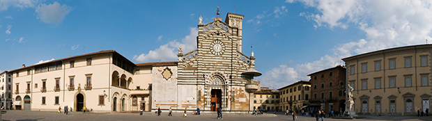

Complex microstructured fluids -- particle suspensions, emulsions, polymeric fluids, etc. -- occur ubiquitously. Constitutive models of their viscoelastic behaviour commonly used in CFD assume that non-Newtonian effects can be well described by simple constitutive equations with a small number of parameters. While these models provide valuable insight, they have met only limited success in the prediction of complex flows of complex fluids. For instance, the Oldroyd-B model and its extensions fail to predict even qualitatively the experimentally observed drag coefficient of a sphere in creeping flows of dilute polymer solutions. Further, many industrial flows are strongly straining extension-dominated flows which present significant numerical challenges to computation. Consequently, systematic computational design and optimization of industrial processing of complex fluids is currently well out of reach, and this constitutes a major bottleneck in responding to the global challenge of designing sustainable industrial processes for handling complex fluids.
Complexity in flow behaviour arises from the strong two-way coupling between the dynamics of the macroscopic flow and the microstructure. To accurately resolve this coupling, the local evolution of the microstructure in a high dimensional space must be adequately projected onto the stress tensor that enters the field equations for the macroscopic flow. The path from (1) mesoscale simulations, to (2) microstructure-based constitutive models for the stress tensor, to (3) using them in CFD simulations of macroscopic flows, is, however, far from clear, and is yet to be systematically and successfully demonstrated for any kind of complex fluid.
We seek to gather leaders in the field to consider the following broad questions.
- Computer simulations are a new way of linking theory and experiment. Advances in theory and computational techniques, and the growth in computer power have now made detailed mesoscale simulations of microstructural dynamics in strong homogenous flows, including extensional flows, a reality. What challenges remain in successfully comparing their results against single-molecule experiments and rheometric measurements?
- How close are we to combining statistical mechanical approaches with insight from mesoscale simulations to obtaining microstructure-based rheological constitutive models for the stress tensor ?
- How well do these models compare against experiments? Can micro-macro simulations directly coupling mesoscale simulations to macroscopic flow simulations also be used to test the performance of closed-form constitutive models? Given the resolution and stability limits on the CFD of complex fluids, what canonical experimental flows can serve as robust tests of microstructure-based constitutive models?
- Biofluids, foods, and multi-component industrial formulations that comprise Fast-Moving Consumer Goods (FMCGs) are mixtures of polymers, particles, drops, surfactants, etc. To accurately compute such flows and optimize design processes, how do we exploit recent developments in the characterization of nonlinear rheological properties to efficiently collect data across a wide range of flows and scales with Big Data analytics, and combine this "rheoinformatics" approach with data-infused simulations or Physics- Informed Machine-Learning algorithms of complex fluids?
Besides keynote talks by leading researchers, and invited and contributed talks, the Workshop also includes a Poster session for showcasing early-career researchers and facilitating networking and cross-fertilization of ideas. The Workshop will also feature discussion sessions to identify key challenges in the next decade, with the idea that similar workshops will be organized at regular intervals to keep track of the progress towards meeting those challenges.
We are also celebrating the 65th birthday of Prof. Ravi Prakash Jagadeeshan, Monash University ! The Workshop will feature a special session to celebrate his contributions to mesoscale simulations and the understanding of viscoelastic polymeric fluids.
In addition, the Welcome Reception, Conference Dinner, and coffee & lunch sessions provide ample opportunities for networking and interaction.
